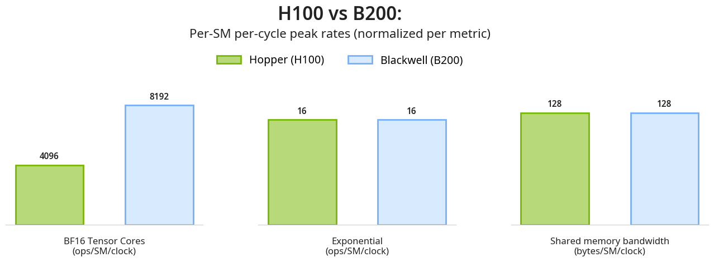
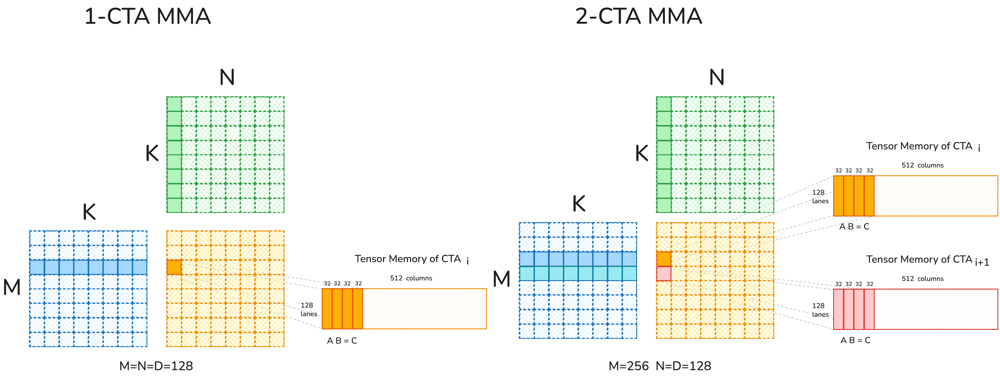
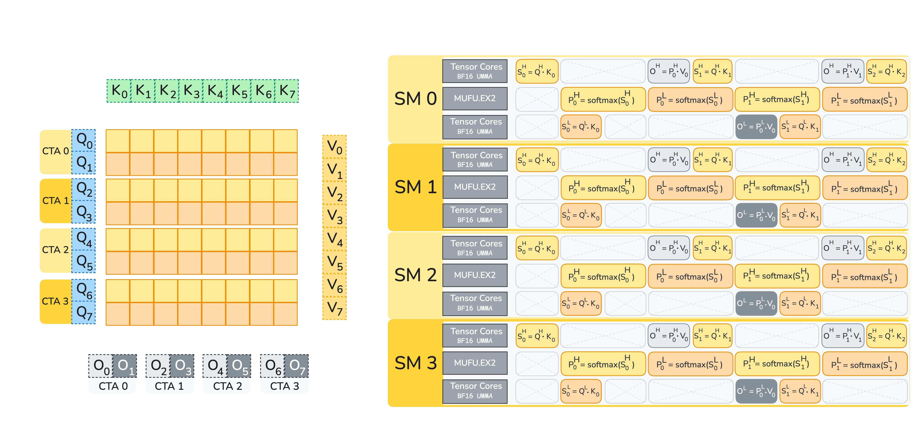
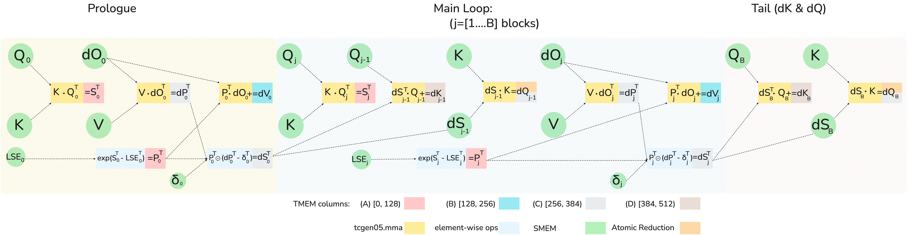
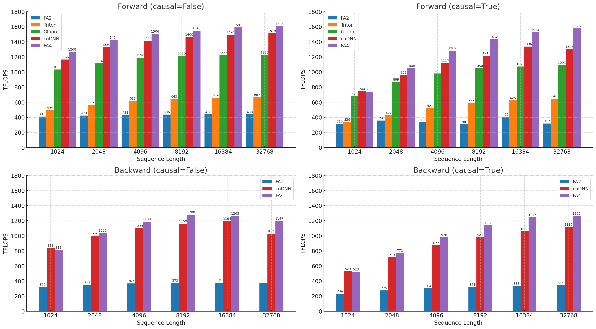
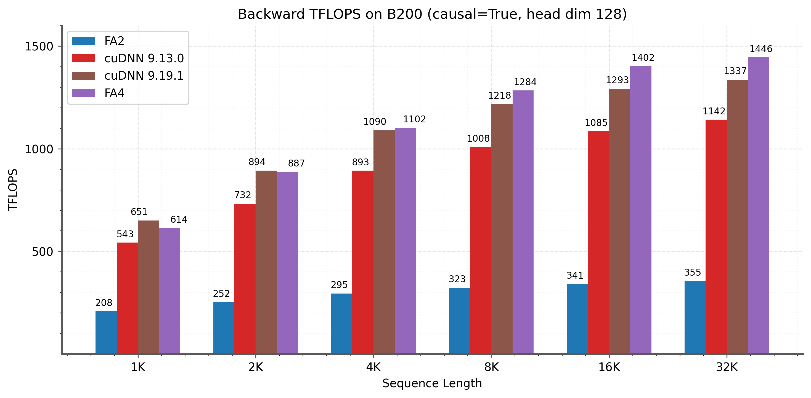
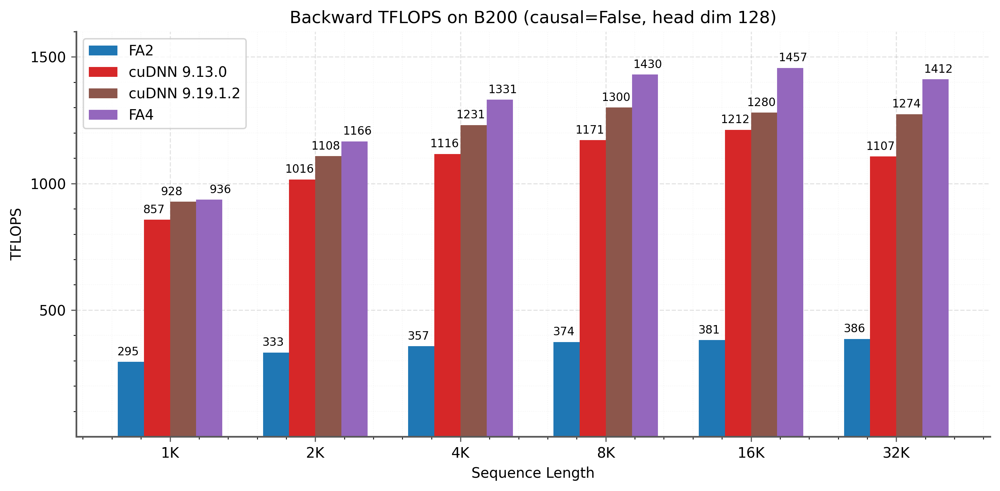
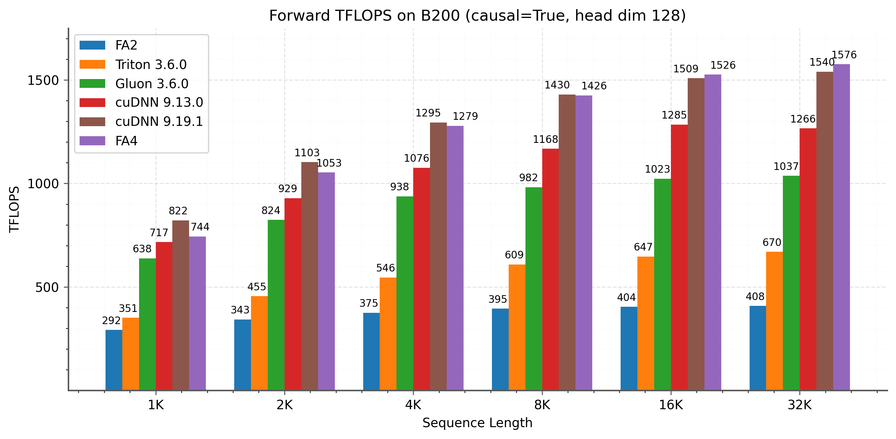
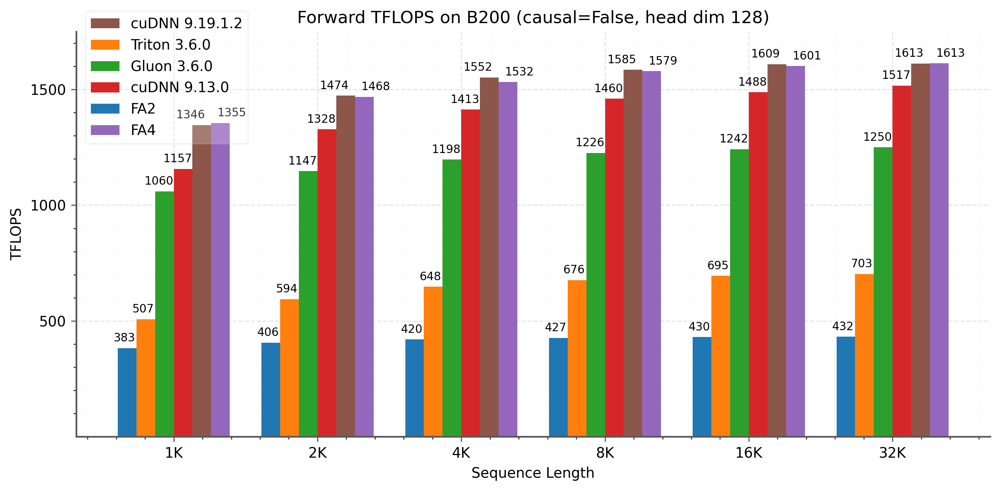
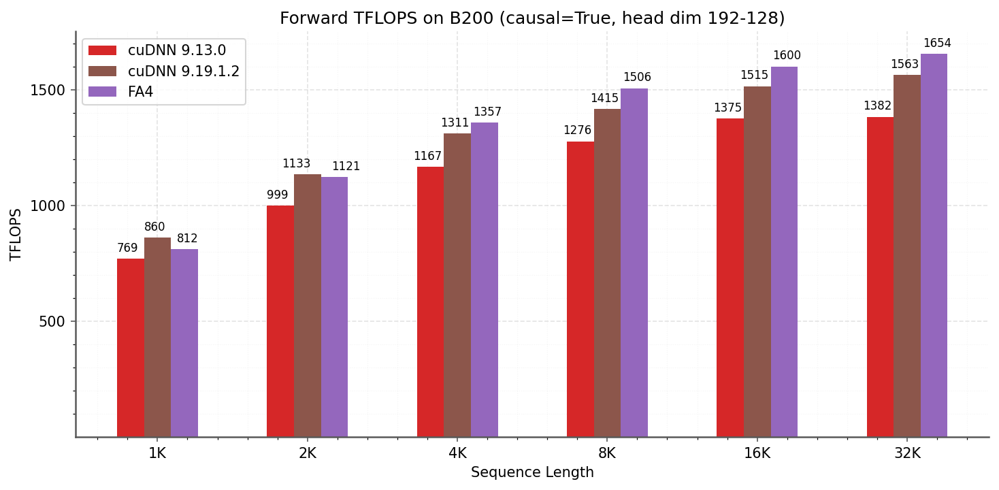

Modern accelerators like Blackwell GPUs continue the trend of asymmetric hardware scaling, where tensor core throughput grows far faster than other resources such as shared memory bandwidth, special function units (SFUs) for transcendental operations like exponential, and general-purpose integer and floating-point ALUs. From the Hopper H100 to the Blackwell B200, for instance, BF16 tensor core throughput increases from 1 to 2.25 PFLOPs, while both the SFU count and shared memory bandwidth remains unchanged.
This scaling asymmetry has profound implications for optimizing complex kernels like attention for the Blackwell architecture. At its core, attention comprises two GEMMs and with softmax in-between; in practice, it also involves substantial plumbing and bookkeeping: data movement, synchronization, layout transforms, element-wise ops, scheduling, masking, etc.
A naive viewpoint on attention might be that the speed of the GEMMs completely controls the kernel performance and one can effectively disregard these other attention components, at least to first order. However, doing a “feeds and speeds” analysis for B200 in fact shows the opposite: the main performance bottleneck lies not in how fast the tensor cores can do MMA, but rather (a) in the SFU units for softmax exponential during the FWD computation, and (b) in the shared-memory traffic during the BWD computation.
In this blog post, we present FlashAttention-4, an algorithm and kernel co-design that maximizes overlap between matmul and these other resource bottlenecks. On B200 with BF16, it reaches up to 1605 TFLOPs/s (71% utilization), up to 1.3× faster than cuDNN version 9.13 and 2.7× faster than Triton.
Our main algorithmic and kernel co-design ideas are as follows:
- New pipelining for maximum overlap: New forward and backward software pipelines that exploit Blackwell fully asynchronous MMA and larger tile sizes, overlapping tensor cores, softmax exponential, and memory operations.
- Forward (FWD) pass: A software emulation of the exponential function implemented via polynomial approximation on FMA units to mitigate the exponential bottleneck, plus conditional online softmax rescaling.
- Backward (BWD) pass: Storing intermediate results in tensor memory to relieve shared-memory traffic, combined with Blackwell's new 2-CTA MMA mode to reduce shared memory traffic further and also cut atomic reduction in half, and additional support for deterministic execution mode for reproducible training.
- Scheduling: New tile scheduler to mitigate load imbalance from causal mask and variable sequence length.
New hardware features on Blackwell
- Tensor memory (TMEM): On B200, each of the 148 SMs has 256 KB of TMEM, an on chip scratchpad wired into the tensor cores for warp synchronous intermediate storage.
- Fully asynchronous 5th gen tensor cores:
tcgen05.mmais asynchronous and accumulates in TMEM. For BF16 and FP16, the largest single CTA UMMA tile is 128×256×16, which is about 2× larger than the largest Hopper WGMMA atom. UMMA is launched by a single thread, easing register pressure and making larger tiles and deeper pipelines practical without the spilling pain points of Hopper warpgroup MMA. This also makes warp specialization more viable, with some warps moving tiles while others issue MMA to overlap matrix multiply accumulate with softmax and memory traffic.tcgen05.mmacan also source operand A from TMEM. - 2-CTA MMA.: Blackwell can execute one UMMA across a CTA pair in the same cluster, spanning the TMEM of both peer CTAs. One thread in the leader CTA launches the MMA, but both CTAs must stay active while it is in flight. This scales the MMA tile dimension up to 256×256×16 by splitting M and N across the pair, reducing redundant traffic and lowering per CTA footprint. The CTA group size, 1 or 2, must remain constant across TMEM and tensor core operations within a kernel.

Feeds and Speeds
For M=N=D=128
Feeds on B200 (per SM):
- Tensor Cores (BF16):
- Exponential unit:
- Shared Memory traffic:
Speeds (clock-cycles per tile):
- Forward (2 MMAs + MN exp)
- Tensor Cores:
- Exp:
- SMEM:
- Backward (5 MMAs + MN exp): 1-CTA
- Tensor Cores:
- Exp:
- SMEM:
Takeaway: Forward is bottlenecked by compute and exponential, backward is bottlenecked by shared memory bandwidth. So we overlap softmax with MMA in the forward pass and reduce shared memory traffic in the backward pass.
Forward pass: New softmax pipelining with conditional rescaling
The forward pass has two matmuls, QK^T and
PV. On Blackwell, tensor cores got much faster, but the
exponential unit (MUFU.EX2) did not. So softmax is no longer “just the
thing between the two matmuls”, it is a bottleneck that must be
carefully pipelined.
The FWD pass in short:
- Ping-pong schedule Q and O tiles per CTA: maximize overlap between MMA and Softmax
- 2x softmax warpgroups: per tile softmax with
synchronization to not overlap when computing exponential
- Software emulation of : distribute exp computation across hardware's MUFU and software emulated on FMA
- Store P in TMEM in stages: mitigate register pressure
- Correction warpgroup: designated "correction"
warpgroup to perform rescaling to remove from critical path
- Online softmax (conditional) rescaling: Rescale less frequently to minimize non-matmul operations

Pipeline: Ping-pong Q tiles plus a dedicated correction stage
FlashAttention-4 computes two query tiles per CTA — and — each covering 128 query tokens, and alternates them in a ping-pong schedule.
Blackwell changes the softmax mapping. The accumulator tile for
S = QK^T is 128×128 and lives in tensor memory; however,
upon being read into registers, we have one thread per
row for the partitioning of the tile as dictated by the
hardware. We use two 128 thread warpgroups, one per Q tile, and each
softmax warpgroup executes the following sequence of
operations:
- Each thread loads one 128 element row of
Sfrom tensor memory into registers - Reduce
rowmaxandrowsum - Using a tunable parameter, decide which portion of the 128 elements uses hardware's MUFU vs. software-emulated
- Compute
P = softmax(S)and convert toBF16precision - Store
Pback to tensor memory in stages to relieve register pressure (as opposed to holding 128 elements of S and 64 (BF16) elements of P simultaneously) - Trigger the corresponding
PVmatmul as soon as a th chunk ofPis stored
The critical detail is that exp is the bottlenecked section. We explicitly synchronize the two softmax warpgroups so they do not evaluate exp at the same time, thereby reducing MUFU contention.
To keep rescaling off the critical path, the kernel assigns it to a dedicated warpgroup. The correction warpgroup computes:
- Only rescale when the max jump is large:
- Apply the final normalization at the end of the iteration
- Optionally compute and store LSE
At the end we still normalize using the true final statistics, so skipping small rescale steps preserves the final output while deleting many vector computations from the critical path. We make the decision at warp granularity to avoid divergence.
Faster exponential: Distribute across MUFU.EX2 and FMA (software emulation)
Softmax requires many exponentials, and MUFU throughput is much lower
than tensor core throughput. FlashAttention-4 increases effective exp
throughput by running the software emulation of exp2
alongside the hardware MUFU.EX2 path, using FMA units that
would otherwise be underutilized.
Range-reduction (Cody-Waite): We use the classical technique of Cody-Waite range reduction to decompose the exponential computation into the integer and the fractional part: . In IEEE 754 float32, scaling by is just an exponent update.
Polynomial approximation of (Horner’s Method): To ****approximate we rewrite in Horner's form for efficient evaluation.
The coefficients p0 = 1.0, p1 ≈ 0.6951,
p2 ≈ 0.2276, p3 ≈ 0.0771 are chosen using the
Sollya software package to minimize the relative approximation error
over
.
Exponent bits shift and add: The final step is to combine the integer part n and the fractional approximation 2^{f} to form 2^{x} \approx 2^{n}\cdot 2^{f} . Since 2^f \in[1,2) has float32 exponent 127, multiplying by 2^{n} is just shifting the integer n into the exponent field and then adding the mantissa bits of 2^{f}.
Backward pass: Where shared memory traffic dominates
Optimizing FlashAttention backward can feel like stuffing an oversized rug into a room: flatten one corner and another pops up. Backward computes about 2.5× the tensor core work of the forward pass, chaining five MMA operations to recompute S and run the QK and PV gradient MMAs for dQ, dK, dP, and dV, plus the element wise work for P and dS. On Blackwell, FLOPs are not the limiter for backward; shared memory bandwidth is
Pipeline: Overlap MMAs with softmax
Hopper-era FlashAttention-3 keeps MMA accumulators in registers, so register pressure often forces a more serial schedule. On Blackwell, accumulators live in TMEM, which makes it practical to keep multiple MMAs in flight while the CUDA cores handle the element wise work for P and dS. Since exponential throughput is comparable to two MMAs in our roofline, hiding it is worth it.

The key overlap is simple: while we compute softmax for tile j, we already issue the dK and dQ MMAs for tile j−1
To reduce shared memory traffic, the backward pass recomputes S and P in a transposed tile relative to the forward pass, so the intermediate is already and . We can then store (and later ) directly in TMEM in the exact operand A layout consumed by the dV and dK MMAs respectively.
TMEM cannot hold five full accumulators and intermediates at once, so FA4 reuses TMEM columns across stages: S and P share one set of columns, and dP, dS, and dQ share another.
2-CTA backward pass: Reducing shared memory traffic and global atomic adds
Shared memory traffic. Even with the improved pipeline and with two of the ten GEMM operands kept in tensor memory, the backward pass is still limited by shared memory bandwidth. We mitigate this with Blackwell 2-CTA MMA mode, which partitions the output accumulator across the CTA pair. With M=256 and N=K=128, the two CTAs cooperate as one tile: each CTA stages half of operand B and keeps only its own accumulator slice. This roughly halves shared memory traffic for operand B.
Reduction axis conflict. We use M=256 and N=K=128 MMA tile across the five backward GEMMs to cut B traffic, but the nature of dQ MMA introduces a mismatch. In FlashAttention backward, each CTA owns a fixed KV tile (outer loop parallelized across N CTAs) and iterates over M tiles in the inner loop. The dQ update reduces over the KV sequence in the outer loop. 2-CTA MMA splits the output tile, not the reduction, and the dQ reduction dimension is N, which is already split across the CTA pair. Each CTA still needs the full reduction for the rows it owns.
Solution: DSMEM exchange. We resolve this by exchanging half of dS between the two CTAs using distributed shared memory within the cluster. This repacks dS so it is partitioned along the non reduction axis: each CTA owns M/2 rows while holding the full 2N reduction. The per CTA dQ MMA becomes (M/2, 2N)(2N, d), accumulating an (M/2, d) tile in tensor memory. In 2-CTA mode, the S, dP, dV, and dK MMAs keep M=256, while dQ uses M=128 with doubled reduction 2N=256. We then reorder the pipeline to hide DSMEM latency: compute dP for the current tile before computing dQ for the previous tile. Since the dQ tile fits in TMEM alongside P, it can reuse the TMEM region used for S, so dP and dQ no longer share a region as in 1-CTA mode. With this ordering, element-wise dS for the current tile overlaps with the dQ MMA from the previous iteration.

dQ atomic adds. As a side benefit, the dQ decomposition halves the number of global atomic reductions. Atomics are nondeterministic and expensive, and they occur in every inner loop iteration. Consequently, in the 2CTA backward pass each CTA writes only half of the dQ tile and performs half as many global atomic reductions as the 1-CTA counterpart.
Deterministic
mode: Reproducible dQ without crushing throughput
The source of nondeterminism is the global atomic accumulation for
dQ. FA4 provides a deterministic mode that serializes the
global reductions with a semaphore-style lock and memory fence to
enforce a fixed accumulation order. However, determinism does not have
to mean “everything stops.” FA4 reduces lock contention with CTA
swizzling, and uses a shortest-processing-time-first (SPT) ordering for
causal masking to reduce stalls. In practice, deterministic backward
reaches up to about 85-90% of the nondeterministic throughput in our
benchmarks.
Scheduling
Causal masking and variable sequence length make attention load imbalanced because different worktiles have different mainloop lengths, so FA4 improves grid linearization and applies longest-processing-time-first (LPT) scheduling to reduce the tail. In fact, these ideas are non-specific to Blackwell or any particular GPU architecture, and we also use them in FA3.
For causal masking, the standard (mblocks, heads, batches) grid order suboptimally processes tiles from shortest to longest, so FA4 swizzles batch-heads into L2-sized sections and traverses the grid by batch-head section, iterating mblocks in reverse order and then the batch-heads within each section.
For variable sequence length, since different batches involve different amounts of work, the given batch-processing order is typically suboptimal from the point of view of the LPT scheduling heuristic. To rectify this, we can launch a preprocessing kernel that sorts batches by maximum per-worktile execution time and writes a virtual to actual batch index mapping that the attention kernel uses to traverse batches in sorted order; moreover, the metadata can be cached so that sorting adds no performance loss. At the time of this writing, we have validated this idea and implemented it for FA3, and we expect to incorporate sorting and other metadata preparation more generally into F4 in the near future.
Language and framework: CuTe-DSL
FA4 is implemented entirely in CuTe-DSL, CUTLASS’ Python kernel DSL. Kernels are written in Python; the DSL lowers to PTX, then the CUDA toolkit compiles to GPU machine code. The programming model mirrors CuTe/CUTLASS abstractions with a PTX escape hatch, while cutting compile times by ~20–30× vs C++ templates.
Attention Benchmarks
We show results for FlashAttention-4 on B200 (BF16) and compare it to FlashAttention-2, as well as to implementations in Triton, Gluon, and cuDNN. For cuDNN, we compare against cuDNN 9.13 and the latest version, 9.19.1.2. Starting with versions 9.13 and 9.14, we have worked with the cuDNN team to incorporate some techniques from FlashAttention-4 into cuDNN, so that our work can benefit as many practitioners as possible. For backward FlashAttention-4 consistently outperforms the other baselines for large sequence lengths. In the forward pass, FlashAttention-4 is 1.1-1.3x faster than cuDNN 9.13 and 2.1-2.7x faster than Triton.






Acknowledgements
We thank Together AI, Meta, xAI, and Princeton Language and Intelligence (PLI) for compute support. We want to further thank the following teams at Nvidia: CuDNN, TensorRT-LLM, and CUTLASS teams for constant discussions, ideas, and feedback.